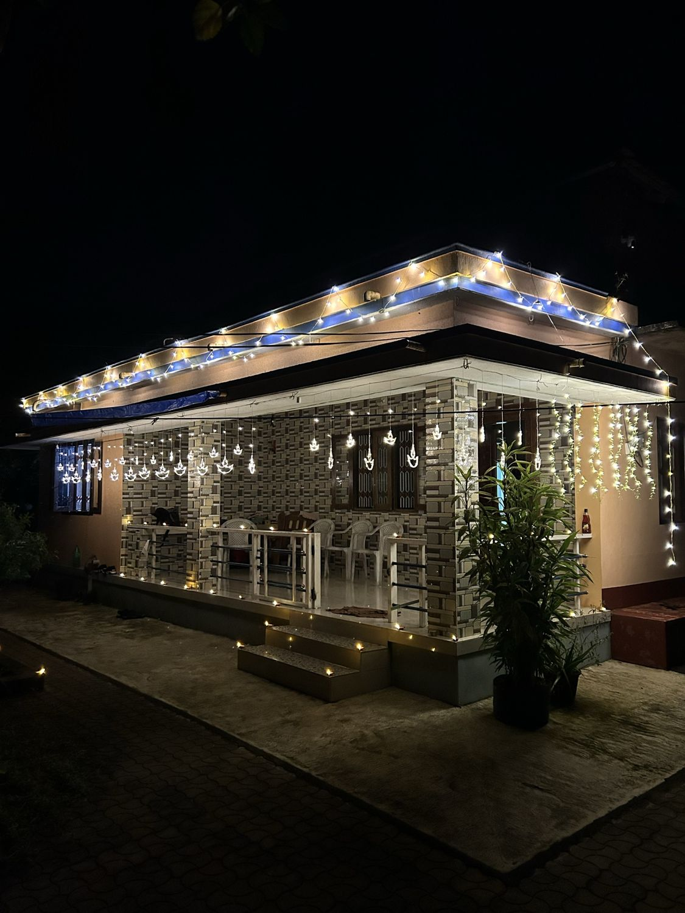
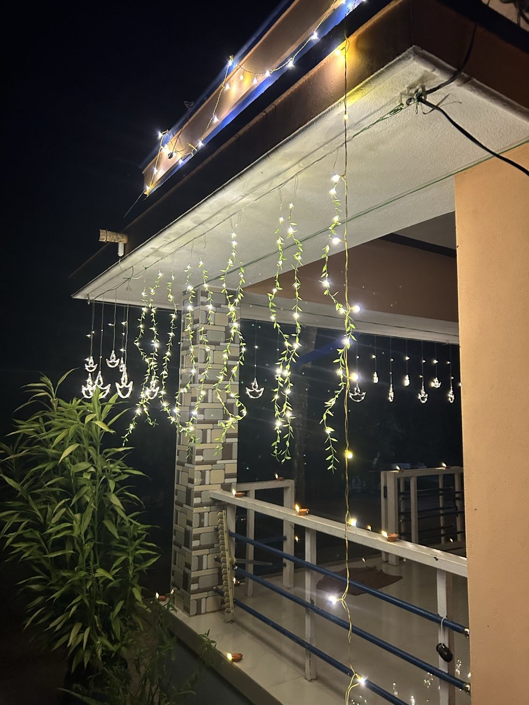
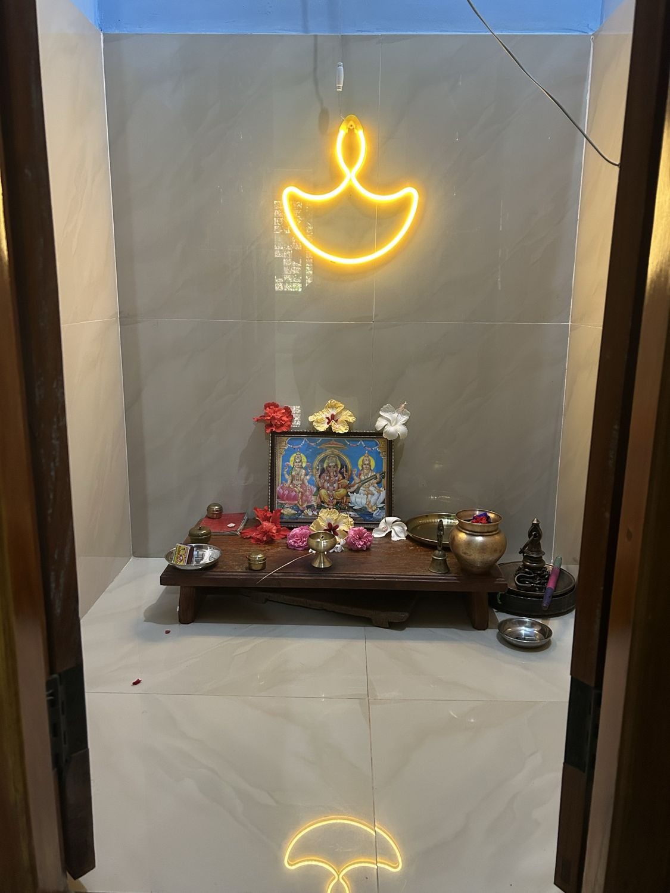
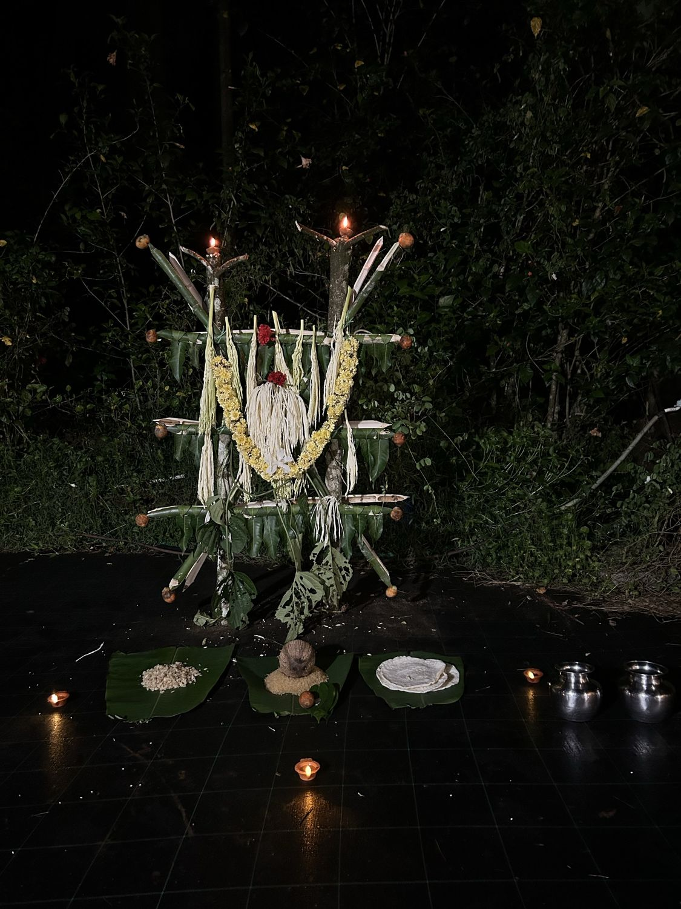
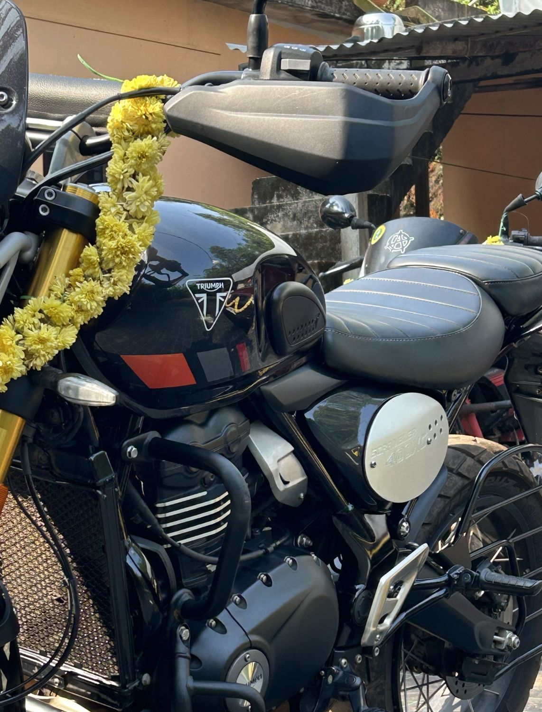

Deepavali in Tulu Nadu: The King We Invite Home
The lamps have only just come down. For three nights our house wore more light than it does all year — and at the centre of it was not a goddess or a victory, but a king we invite back every single year, knowing he can never really come.


Everywhere in India, Deepavali is the festival of lights. On the coast we have our own name for it — Thudar Parba[1] — and our own quiet reasons for lighting them. Three days: Naraka Chaturdashi, the morning of the oil bath; Lakshmi Puja on the new-moon night; and Bali Padyami, which is the day that is truly ours.[1]
Every coast has lamps. What makes our Deepavali ours is not the light — it's who we're lighting it for.
It begins in the dark, with a bath
There are no fireworks at the start of a Tulu Deepavali. There is a bath. On Naraka Chaturdashi, you wake before sunrise, rub oil over your whole body and let it work in, and only then take a hot-water bath[1] — the water heated in a copper vessel called a mande, which the children of the house fill the night before, the well and the bathroom decorated with drawings, flowers and leaves.[1] The whole south begins its Deepavali this way, in the half-dark, scrubbed clean before the day has even started.
The reason given is an old one: this is the morning Krishna killed the demon Narakasura, and the oil bath is how you wash the demon's defeat — and a year's worth of your own grime — off your skin.[1][2] Then come the new clothes, the lamps, the crackers, and the one thing no Tuluva Deepavali can skip: a bowl of sweetened bajil — beaten rice, what the north calls poha — which is as mandatory here as the lamps themselves.[1]
But first, the ones who are gone
Before any of the sweetness is ours, some of it goes to the dead. On Deepavali morning, before sunrise, families remember the relatives who died in the past year — a small rite called Bajil Padunu. You lay out bajil sweetened with jaggery and mixed with coconut shavings, sesame and ghee, with dosa and banana and a lit lamp, and you pray together, and only after that does the festival properly begin.[1]
I've come to notice that our calendar keeps doing this — turning, again and again, back toward the people who came before. In Aati we drink a bitter bark decoction for the ancestors; in the groves we feed the serpent-spirits of the land. Here, on the brightest morning of the year, the first plate is set for the dead. The light is for the living; it is lit in a house that has already remembered who is missing from it.
Lakshmi's night
The second day belongs to Lakshmi. On the new-moon night — Amavasya — the goddess of fortune is believed to visit each house, and so each house makes itself worth visiting: cleaned, lit, and opened. Jewellers and bankers, whose whole trade is her domain, do the grandest pujas of all.[1]

You can see the whole logic of the festival in that little table: the goddess of wealth flanked by the remover of obstacles and the goddess of learning. Fortune, in the middle, held up on one side by the thing that clears your path and on the other by the thing that earns it. Nobody arranges a shrine thinking about it that way. But that is what it says.
Bali Padyami: the king we call home
And now the day that is ours alone.
Most of India keeps the third day as Bali Padyami, the day of King Bali's yearly return, and leaves it at that.[4] Here it has a face and a name: Baliyendra — Baleendra, King Bali. The story is one of the gentlest and saddest in all our telling. Bali was an asura king, but a good one — generous, just, beloved — who ruled Jamboo Dweepa, which in our reckoning included Tulunadu itself.[3] He grew too powerful for the gods' comfort, and so Vishnu came to him as Vamana, a small Brahmin boy, and asked for three paces of land. Bali, generous to the last, agreed — and in three strides the boy covered the earth, the sky, and finally pressed the king down into paatala, the underworld.[3]
But as he was being sent away, Bali asked for one thing: to see his people, just once a year. It was granted. And so every year he is allowed to return — to Kerala at Onam, and here, to Tulunadu, at Deepavali.[3] Thudar Parba, at its heart, is us keeping that appointment. We light the lamps so our king, climbing back up out of the dark for one night, can find his way home and see that his people are well.

The stand itself is a small, serious piece of making. It is traditionally cut from paleda wood — Alstonia scholaris, the very tree whose bitter bark becomes the Aati kashaya we drink in the monsoon — though these days a jackfruit tree will do; it's dressed with flowers and lamps, and at its base, on banana leaves, you place a tender coconut on one and sweetened bajil, banana and neer dosa on another.[1] In the late evening the whole family gathers in front of it, each person holding a little bajil in their cupped hands; the eldest prays for the house, and then everyone offers.[1]
And then we go out and call him. Men and women walk into the harvested fields with lanterns in their hands and lamps set down in the open earth, and together they shout for Baliyendra to come.[3] But here is the part that undoes me every year. The invitation is a list of impossible things. The lines run roughly like this — come when a stone bull bellows; come when a flower blooms on a white rock and a fruit on a black one; come when an old woman turns into a bride; come to Tulunadu on a boat with a hole in it — and after each one, everyone present answers with a long "Koo!" into the dark.[3][1]
We invite our king home with conditions we know can never be met. We call him across the fields and, in the same breath, make certain he can't come. It is the most tender thing a people ever worked out: a way to love someone, and still say — not yet, the world isn't ready for you — but we remember you, and we will stand in this field and call for you again next year.
The cattle, the tools, and the bike
Bali Padyami is also the day we thank everything that works for us. The cattle come first: bathed in the morning, then at night — after the Bali puja — garlanded, marked with kumkum on the forehead, their legs washed. You show them a straw tray (a thadpe) holding rice, bajil and a lamp, do a small puja, and feed each one neer dosa and banana on a banana leaf.[1] Then the farmer carries his plough and sickle out to the field, decorates them with flowers and leaves, and prays over them too.[1]
Fewer of us farm now. But the instinct didn't die — it just changed what it garlands. The tools we dress in marigold today are as likely to have an engine as a blade.

It's the same impulse I wrote about at Dasara, in the Ayudha Puja — that your livelihood is a gift worth thanking, and the machine that earns it deserves a day of reverence as much as you do. A plough, an areca cutter, a laptop, a motorcycle: it doesn't matter. You garland what works for you, and for a day you call it holy.
What our Deepavali is really about
Step back and the shape of it is clear. Our Deepavali is barely about defeating a demon — that's a footnote you wash off in the morning bath. It is about a good king and a grateful people; about the dead fed before the living; about the cattle thanked and the tools blessed; and about a yearly, impossible invitation shouted into a dark field.
This year I stood in front of our paleda stand with a handful of bajil, and later I called "Koo" into the night like I have since I was small — for a king who, the story is careful to promise, cannot actually come. And I think I finally understood that we were never really calling Bali. A people that will stand in a harvested field once a year and call for someone who can't return is really practising something harder: how to keep remembering. We were calling him home so that we would not forget how. On a coast changing as fast as mine, I'm not sure there's a more important thing a festival could teach.
Sources & references
Cultural claims are sourced below; observance varies by family, community and town, so I've kept it general. The legend of Baliyendra is told as legend. My own family's practice — and the photographs — are mine, and uncited.
- Mangalore Heritage — "Thudar Parba — Deepawali Of Tuluvas With Unique Traditions." (the Tulu name Thudar Parba; the pre-dawn oil bath and the copper mande; mandatory sweetened bajil; the Bajil Padunu rite for the year's dead; Lakshmi Puja on Amavasya; the Baliyendra stand of paleda / jackfruit wood with offerings on banana leaves; the family gathering with bajil and the "Koo" call; cattle worship with the thadpe tray and neer dosa; worship of plough and sickle)
- Wikipedia — "Naraka Chaturdashi." (the pre-dawn abhyanga oil bath; the slaying of Narakasura by Krishna; South India's dawn observance)
- ficklesorts (Ashwini Jain) — "The agrarian legend of Baleendra in Tulunadu." (King Bali as a benevolent asura ruler of Jamboo Dweepa; Vishnu as Vamana and the three steps; the boon to return once a year — Tulunadu at Deepavali, Kerala at Onam; walking into harvested fields with lanterns; the recitation of impossible conditions answered with "koo")
- Wikipedia — "Bali Padyami (Balipratipada)." (the day marking King Bali's annual return; cattle decorated and worshipped; a principal day of Deepavali in Karnataka)